정보처리기사(구) (2018-08-19 기출문제)
1과목: 데이터 베이스
1. Linear Search의 평균 검색 회수는?
- n-1
- (n＋1)/2
- n
- n/2
(정답률: 63%)

2. 관계 데이터베이스 제약조건 중 한 릴레이션의 기본키를 구성하는 어떠한 속성 값도 널(NULL) 값이나 중복 값을 가질 수 없다는 조건은?
- 키 제약 조건
- 참 조 무결성 제약 조건
- 참여 제약 조건
- 개체 무결성 제약 조건
(정답률: 84%)
3. 해싱에서 동일한 홈 주소로 인하여 충돌이 일어난 레코드들의 집합을 의미하는 것은?
- Synonym
- Collision
- Bucket
- Overflow
(정답률: 77%)
4. 뷰에 대한 설명으로 옳지 않은 것은?
- 뷰는 삽입, 삭제, 갱신 연산에 제약사항이 없다.
- 뷰는 데이터 접근 제어로 보안을 제공한다.
- 뷰는 독자적인 인덱스를 가질 수 없다.
- 뷰는 데이터의 논리적 독립성을 제공한다.
(정답률: 75%)
5. 다음 정규화에 대한 설명으로 틀린 것은?
- 데이터베이스의 개념적 설계 단계에서 수행한다.
- 데이터 구조의 안정성을 최대화한다.
- 중복을 배제하여 삽입, 삭제, 갱신 이상의 발생을 방지한다.
- 데이터 삽입 시 릴레이션을 재구성할 필요성을 줄인다.
(정답률: 69%)
6. n개의 노드로 구성된 무방향 그래프의 최대 간 선수는?
- n-1
- n(n-1)/2
- n/2
- n(n＋1)
(정답률: 77%)
7. 다음 postfix로 표현된 연산식의 연산 결과로 옳은 것은?
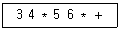
- 35
- 42
- 81
- 360
(정답률: 83%)
8. 동시성 제어를 위한 직렬화 기법으로 트랜잭션 간의 순서를 미리 정하는 방법은?
- 로킹 기법
- 타임스탬프 기법
- 검증 기법
- 배타 로크 기법
(정답률: 66%)
9. SQL 문장 중 DDL문이 아닌 것은?
- CREATE
- DELETE
- ALTER
- DROP
(정답률: 83%)
10. 다음 문장의 빈칸에 들어갈 단어는?
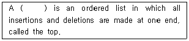
- Stack
- Queue
- List
- Tree
(정답률: 77%)
11. 해싱 테이블의 오버플로우 처리 기법이 아닌 것은?
- 개방 주소법
- 폐쇄 주소법
- 로그 주소법
- 재해싱
(정답률: 41%)
12. 데이터베이스 설계 단계 중 저장 레코드 양식 설계, 레코드 집중의 분석 및 설계, 접근 경로 설계와 관계되는 것은?
- 논리적 설계
- 요구 조건 분석
- 물리적 설계
- 개념적 설계
(정답률: 66%)
13. 다음 정의에서 말하는 기본 정규형은?
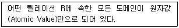
- 제1정규형(1NF)
- 제2정규형(2NF)
- 제3정규형(3NF)
- 보이스/코드 정규형(BCNF)
(정답률: 83%)
14. 아래와 같은 결과를 만들어내는 SQL문은?
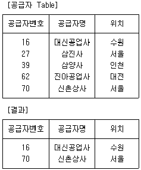
- SELECT * FROM 공급자 WHERE 공급자명 LIKE '%신%'
- SELECT * FROM 공급자 WHERE 공급자명 LIKE '대%'
- SELECT * FROM 공급자 WHERE 공급자명 LIKE '%사'
- SELECT * FROM 공급자 WHERE 공급자명 LIKE '_사'
(정답률: 82%)
15. 다음 그림에서 트리의 차수는?
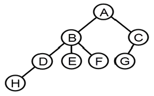
- 3
- 4
- 6
- 8
(정답률: 78%)
16. 병행 제어의 로킹(Locking) 단위에 대한 설명으로 옳지 않은 것은?
- 데이터베이스, 파일, 레코드 등은 로킹 단위가 될 수 있다.
- 로킹 단위가 작아지면 로킹 오버헤드가 증가한다.
- 한꺼번에 로킹할 수 있는 단위를 로킹 단위라고 한다.
- 로킹 단위가 작아지면 병행성 수준이 낮아진다.
(정답률: 77%)
17. 데이터베이스에서 널(NULL) 값에 대한 설명으로 옳지 않은 것은?
- 아직 모르는 값을 의미한다.
- 아직 알려지지 않은 값을 의미한다.
- 공백이나 0(ZERO)과 같은 의미이다.
- 정보 부재를 나타내기 위해 사용한다.
(정답률: 74%)
18. 다음 SQL 문에서 ( )안에 들어갈 내용으로 옳은 것은?
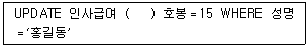
- SET
- FROM
- INTO
- IN
(정답률: 73%)
19. 다음 자료를 버블 정렬을 이용하여 오름차순으로 정렬할 경우 PASS 3의 결과는?
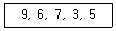
- 6, 3, 5, 7, 9
- 3, 5, 6, 7, 9
- 6, 7, 3, 5, 9
- 3, 5, 9, 6, 7
(정답률: 71%)
20. 3NF에서 BCNF가 되기 위한 조건은?
- 이행적 함수 종속 제거
- 부분적 함수 종속 제거
- 다치 종속 제거
- 결정자이면서 후보키가 아닌 것 제거
(정답률: 72%)
2과목: 전자 계산기 구조
21. 하나 이상의 프로그램 또는 연속되어 있지 않은 저장 공간으로부터 데이터를 모은 다음, 데이터들을 메시지 버퍼에 넣고, 특정 수신기나 프로그래밍 인터페이스에 맞도록 그 데이터를 조직화하거나 미리 정해진 다른 형식으로 변환하는 과정을 일컫는 것은?
- Porting
- Converting
- Marshalling
- Streaming
(정답률: 38%)
22. 불 함수식 F＝(A＋B)ㆍ(A＋C)를 가장 간소화한 것은?
- F＝A＋BC
- F＝B＋AC
- F＝A＋AC
- F＝C＋AB
(정답률: 63%)
23. 하나의 입력 정보를 여러 개의 출력선 중에 하나를 선택하여 정보를 전달하는데 사용하는 것은?
- 디코더(Decoder)
- 인코더(Encoder)
- 멀티플렉서(Multiplexer)
- 디멀티플렉서(Demultiplexer)
(정답률: 39%)
24. DMA 명령어 사이클에 대한 설명이 가장 옳지 않은 것은?
- 간접 사이클은 피연산 데이터가 있는 기억 장치의 유효 주소를 계산하는 과정이다.
- 인터럽트 사이클은 요청된 서비스 프로그램을 수행하여 완료할 때까지의 과정이다.
- 실행 사이클은 연산자 코드의 내용에 따라 연산을 수행하는 과정이다.
- 패치 사이클은 주기억 장치로부터 명령어를 꺼내어 디코딩하는 과정이다.
(정답률: 42%)
25. 아래 보기와 같이 명령어에 오퍼랜드 필드를 사용하지 않고 명령어만 사용하는 명령어 형식은?
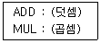
- Zero-Address Instruction Mode
- One-Address Instruction Mode
- Two-Address Instruction Mode
- Three-Address Instruction Mode
(정답률: 51%)
26. 인터럽트의 처리 루틴의 순서로 올바른 것은?
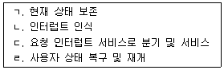
- ㄱ → ㄴ → ㄷ → ㄹ
- ㄴ → ㄷ → ㄱ → ㄹ
- ㄴ → ㄱ → ㄹ → ㄷ
- ㄴ → ㄱ → ㄷ → ㄹ
(정답률: 56%)
27. 10진수 3은 3-초과 코드(Excess-3 Code)에서 어떻게 표현되는가?
- 0011
- 0110
- 0101
- 0100
(정답률: 50%)
28. 인터럽트 우선순위를 결정하는 Polling 방식에 대한 설명으로 옳지 않은 것은?
- 많은 인터럽트 발생 시 처리 시간 및 반응 시간이 매우 빠르다.
- S/W 적으로 CPU가 각 장치 하나하나를 차례로 조사하는 방식이다.
- 조사 순위가 우선순위가 된다.
- 모든 인터럽트를 위한 공통의 서비스 루틴을 갖고 있다.
(정답률: 44%)
29. 데이터를 고속으로 처리하기 위해 연산 장치를 병렬로 구성한 처리 구조로 벡터 계산이나 행렬 계산에 주로 사용되는 프로세서의 명칭으로 가장 옳은 것은?
- 코프로세서
- 다중 프로세서
- 배열 프로세서
- 대칭 프로세서
(정답률: 48%)
30. 레지스터 사이의 데이터 전송 방법에 대한 설명으로 가장 옳지 않은 것은?
- 직렬 전송 방식에 의한 레지스터 전송은 하나의 클록 펄스 동안에 하나의 비트가 전송되고, 이러한 비트 단위 전송이 모여 워드를 전송하는 방식을 말한다.
- 병렬 전송 방식에 의한 레지스터 전송은 하나의 클록 펄스 동안에 레지스터 내의 모든 비트 즉, 워드가 동시에 전송되는 방식을 말한다.
- 병렬 전송 방식에 의한 레지스터 전송은 직렬 방식에 비해 속도가 빠르고 결선의 수가 적다는 장점을 가지고 있다.
- 버스 전송 방식에 의한 레지스터 전송은 공통의 통신로를 이용하므로 병렬 전송 방식에 의한 레지스터 전송 방식보다 결선의 수가 적다.
(정답률: 52%)
31. 다음 중 연산 속도가 가장 빠른 주소 지정 방식(Addressing Mode)은?
- Direct Addressing Mode
- Indirect Addressing Mode
- Calculate Addressing Mode
- Immediate Addressing Mode
(정답률: 47%)
32. 채널을 이용한 입출력 제어 방식의 특징으로 가장 옳지 않은 것은?
- 다양한 입출력 장치와 단말 장치를 동시에 독립해서 동작시킬 수 없다.
- 입출력 동작을 중앙 처리 장치와는 독립적이면서 비동기적으로 실행한다.
- 멀티프로그래밍이 가능하다.
- 대용량 보조 기억 장치를 입출력 장치와 같은 레벨로 중앙 처리 장치와 독립해서 동작시킬 수 있다.
(정답률: 44%)
33. 프로그램이 가능한 논리 소자로, n개의 입력에 대하여 2n개 이하의 출력을 만들 수 있는 논리 회로는?
- RAM
- ROM
- PLA
- Pipeline Register
(정답률: 45%)
34. CPU에 두 개의 범용 레지스터와 하나의 상태 레지스터가 존재할 때 두 범용 레지스터의 값이 동일한지 조사하기 위한 방법으로 옳은 것은? (단, 그림에 보이는 상태 레지스터 내용을 참조하시오.)
- 두 개의 레지스터의 내용을 뺀 후, Zero 여부를 조사한다.
- 두 개의 레지스터의 내용을 더한 후, Zero 여부를 조사한다.
- 두 개의 레지스터의 내용을 뺀 후, Overflow 여부를 조사한다.
- 두 개의 레지스터의 내용을 더한 후, Carry 여부를 조사한다.
(정답률: 44%)
35. 캐시 기억 장치에서 적중률이 낮아질 수 있는 매핑 방법은?
- 연관 매핑
- 세트-연관 매핑
- 간접 매핑
- 직접 매핑
(정답률: 34%)
36. 컴퓨터의 중앙 처리 장치(CPU)는 4가지 단계를 반복적으로 거치면서 동작한다. 4가지 단계에 속하지 않는 것은?
- Fetch Cycle
- Branch Cycle
- Interrupt Cycle
- Execute Cycle
(정답률: 55%)
37. 중앙 처리 장치의 기억 모듈에 중복적인 데이터 접근을 방지하기 위해서 연속된 데이터 또는 명령어들을 기억 장치 모듈에 순차적으로 번갈아 가면서 처리하는 방식으로 가장 옳은 것은?
- 복수 모듈
- 인터리빙
- 멀티플렉서
- 셀렉터
(정답률: 58%)
38. RISC(Reduced Instruction Set Computer)와 CISC(Complex Instruction Set Computer)에 대한 설명 중 가장 옳지 않은 것은?
- RISC는 실행 빈도가 적은 하드웨어를 제거하여 자원 이용률을 높이는 장점이 있다.
- RISC는 프로그램의 길이가 길어지므로 CISC보다 수행 속도가 느린 단점이 있다.
- CISC는 고급 언어를 이용하여 알고리즘을 쉽게 표현 할 수 있는 장점이 있다.
- CISC는 복잡한 명령어군을 제공하므로 컴퓨터 설계 및 구현 시 많은 시간을 필요로 하는 단점이 있다.
(정답률: 45%)
39. 캐시의 각 워드에 카운터를 두고 접근할 때마다 카운터를 증가시키고 제거 시에는 카운터 값이 가장 적은 블록을 제거하는 방식은? (문제 오류로 실제 시험에서는 3,4번이 정답처리 되었습니다. 여기서는 3번을 누르면 정답 처리 됩니다.)
- FIFO
- FILO
- LRU
- LFU
(정답률: 60%)
40. 하드 디스크 드라이브(HDD)와 컴퓨터 메인보드 간의 연결에 사용되는 인터페이스 방식이 아닌 것은?
- SATA
- EIDE
- DDR4
- SCSI
(정답률: 47%)
3과목: 운영체제
41. 준비 상태 큐에 프로세스 A, B, C가 차례로 도착하였다. 라운드 로빈(Round Robin)으로 스케줄링할 때 타임 슬라이스를 4초로 한다면 평균 반환 시간은?
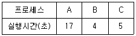
- 12초
- 14초
- 17초
- 18초
(정답률: 47%)
42. 상호배제(Mutual Exclusion) 기법을 사용하여 임계영역(Critical Region)을 보호하였다. 다음 설명 중 가장 옳지 않은 것은?
- 어떤 프로세스가 임계영역 내의 명령어 실행 중 인터럽트(Interrupt)가 발생하면 이 프로세스는 실행을 멈추고, 다른 프로세스가 이 임계영역 내의 명령어를 실행한다.
- 임계영역 내의 프로그램 수행 중에 교착상태(Deadlock)가 발생하면 교착상태가 해제될 때까지 임계영역을 벗어 날 수 없다. 따라서 임계영역 내의 프로그램에서는 교착상태가 발생하지 않도록 해야 한다.
- 임계영역 내의 프로그램에서 무한 반복(Endless Loop)이 발생하면 임계영역을 탈출할 수 없다. 따라서 임계영역 내의 프로그램에서는 무한 반복이 발생하지 않도록 해야 한다.
- 여러 프로세스들 중에 하나의 프로세스만이 임계영역을 사용할 수 있도록 하여 임계영역에서 공유 변수 값의 무결성을 보장한다.
(정답률: 47%)
43. 교착상태의 해결 방법 중 회피(Avoidance) 기법과 가장 밀접한 관계가 있는 것은?
- 점유 및 대기 방지
- 비선점 방지
- 환형 대기 방지
- 은행원 알고리즘 사용
(정답률: 70%)
44. 페이지 부재율(Page Fault Ratio)과 스래싱(Thrashing)의 관계에 대한 설명 중 가장 옳은 것은?
- 페이지 부재율이 크면 스래싱이 많이 일어난 것이다.
- 페이지 부재율과 스래싱은 관계가 없다.
- 다중 프로그래밍의 정도가 높아지면 페이지 부재율과 스래싱이 감소한다.
- 스래싱이 많이 발생하면 페이지 부재율이 감소한다.
(정답률: 57%)
45. 다음 표는 고정 분할에서의 기억장치 단편화(Fragmentation) 현상을 보이고 있다. 외부단편화(External Fragmentation)의 크기는 총 얼마인가? (단, 페이지 크기의 단위는 K를 사용한다.)
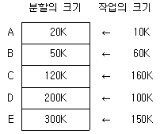
- 480K
- 430K
- 260K
- 170K
(정답률: 51%)
46. 운영체제의 운용 기법 중 중앙 처리 장치의 시간을 각 사용자에게 균등하게 분할하여 사용하는 체제로서 모든 컴퓨터 사용자에게 똑같은 서비스를 제공하는 것을 목표로 삼고 있으며, 라운드 로빈 스케줄링을 사용하는 것은?
- Real-Time Processing System
- Time Sharing System
- Batch Processing System
- Distributed Processing System
(정답률: 69%)
47. 시스템 소프트웨어의 역할로 가장 거리가 먼 것은?
- 프로그램을 메모리에 적재한다.
- 인터럽트를 관리한다.
- 복잡한 수학 계산을 처리한다.
- 기억 장치를 관리한다.
(정답률: 60%)
48. 운영체제의 기능으로 가장 거리가 먼 것은?
- 사용자 인터페이스 제공
- 자원 스케줄링
- 데이터의 공유
- 원시 프로그램을 목적 프로그램으로 변환
(정답률: 74%)
49. 빈 기억 공간의 크기가 20K, 16K, 8K, 40K 일 때 기억 장치 배치 전략으로 “Best Fit"을 사용하여 17K의 프로그램을 적재할 경우 내부 단편화의 크기는 얼마인가?
- 3K
- 23K
- 64K
- 67K
(정답률: 71%)
50. 분산 운영체제에서 사이트(Site) 간 마이그레이션(Migration)의 종류에 해당하지 않는 것은?
- Data Migration
- Computation Migration
- Control Migration
- Process Migration
(정답률: 29%)
51. 모니터에 대한 설명으로 옳지 않은 것은?
- 모니터의 경계에서 상호배제가 시행된다.
- 자료 추상화와 정보은폐 기법을 기초로 한다.
- 공유 데이터와 이 데이터를 처리하는 프로시저로 구성된다.
- 모니터 외부에서도 모니터 내의 데이터를 직접 액세스할 수 있다.
(정답률: 71%)
52. UNIX에서 커널의 기능이 아닌 것은?
- 입/출력 관리
- 명령어 해석 및 실행
- 기억 장치 관리
- 프로세스 관리
(정답률: 66%)
53. HRN 방식으로 스케줄링할 경우, 입력된 작업이 다음과 같을 때 우선순위가 가장 높은 것은?
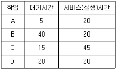
- A
- B
- C
- D
(정답률: 67%)
54. FIFO와 RR 스케줄링 방식을 혼합한 것으로 상위 단계에서 완료되지 못한 작업은 하위 단계로 전달되어 마지막 단계에서는 RR 방식을 사용하는 것은?
- SJF
- SRT
- HRN
- MFQ
(정답률: 44%)
55. 페이지 대치의 설명으로 가장 옳지 않은 것은?
- 페이지의 대치는 그 페이지가 갱신되었기 때문이다.
- 페이지 부재 오류가 발생하였을 때 페이지 대치가 일어난다.
- 앞으로 전혀 참조되지 않을 페이지를 대치하는 것이 이상적이다.
- 한 프로세스 내의 모든 페이지를 수용할 수 있는 양의 프레임이 그 프로세스에 할당되면 페이지 오류율은 0이다.
(정답률: 26%)
56. 다음은 교착상태 발생조건 중 어떤 조건을 제거하기 위한 것인가?
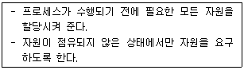
- Mutual Exclusion
- Hold and Wait
- Non-preemption
- Circular Wait
(정답률: 46%)
57. 스케줄링의 목적으로 가장 거리가 먼 것은?
- 모든 작업들에 대해 공평성을 유지하기 위하여
- 단위 시간당 처리량을 최대화하기 위하여
- 응답 시간을 빠르게 하기 위하여
- 운영체제의 오버헤드를 최대화하기 위하여
(정답률: 73%)
58. 운영체제의 발달 과정을 순서대로 옳게 나열한 것은?
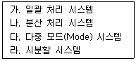
- 가 - 라 - 다 - 나
- 다 - 나 - 라 - 가
- 가 - 다 - 라 - 나
- 다 - 라 - 나 - 가
(정답률: 51%)
59. PCB(Process Control Block)가 갖고 있는 정보가 아닌 것은?
- 프로세스의 현재 상태
- 프로세스 고유 식별자
- 스케줄링 및 프로세스의 우선순위
- 할당되지 않은 주변 장치의 상태 정보
(정답률: 71%)
60. 프로세스가 전송하는 메시지의 형태가 아닌 것은?
- 형식 메시지
- 가변 길이 메시지
- 상대 길이 메시지
- 고정 길이 메시지
(정답률: 50%)
4과목: 소프트웨어 공학
61. 소프트웨어의 위기 현상과 가장 거리가 먼 것은?
- 개발 인력의 급증
- 유지보수의 어려움
- 개발 기간의 지연 및 개발 비용의 증가
- 신기술에 대한 교육과 훈련의 부족
(정답률: 76%)
62. 자료 사전에서 기호 “( )”의 의미는?
- 정의
- 생략
- 선택
- 반복
(정답률: 71%)
63. 소프트웨어 생명주기 모형 중 Bohem이 제시한 고전적 생명주기 모형으로서 선형 순차적 모델이라고도 하며, 타당성 검토, 계획, 요구사항 분석, 설계, 구현, 테스트, 유지보수의 단계를 통해 소프트웨어를 개발하는 모형은?
- 폭포수 모형
- 프로토타입 모형
- 나선형 모형
- RAD 모형
(정답률: 72%)
64. 블랙박스 테스트를 이용하여 발견할 수 있는 오류의 경우로 가장 거리가 먼 것은?
- 비정상적인 자료를 입력해도 오류 처리를 수행하지 않는 경우
- 정상적인 자료를 입력해도 요구된 기능이 제대로 수행되지 않는 경우
- 반복 조건을 만족하는데도 루프 내의 문장이 수행되지 않는 경우
- 경계값을 입력할 경우 요구된 출력 결과가 나오지 않는 경우
(정답률: 61%)
65. 소프트웨어 공학에 대한 설명으로 가장 적합한 것은?
- 소프트웨어의 제작부터 운영까지 생산성을 높이기 위해 기술적, 인간적인 요소에 대한 방법론을 제공한다.
- 소프트웨어의 설계, 제작, 운영에 있어서 인간적인 요소를 배제한 프로그래밍 자체에 대한 공학적 연구를 의미한다.
- 소프트웨어의 공학적이고 기술적인 영향을 사회 경제적인 시각에서만 설명한다.
- 소프트웨어의 위기를 해결하기 위해서 현재 이미 해결된 문제들에 대해서 역사적 관점을 설명한다.
(정답률: 63%)
66. 시스템의 구성 요소 중 출력된 결과가 예정된 목표를 만족시키지 못할 경우 목표 달성을 위해 반복 처리하는 것을 의미하는 것은?
- Process
- Feedback
- Control
- Output
(정답률: 73%)
67. 객체지향 개발 과정에 대한 설명으로 가장 거리가 먼 것은?
- 분석 단계에서는 객체의 이름과 상태, 행위들을 개념적으로 파악한다.
- 설계 단계에서는 객체의 속성과 연산으로 정의하고 접근 방법을 구체화한다.
- 구현 단계에서는 클래스를 절차적 프로그래밍 언어로 기술한다.
- 테스트 단계에서는 클래스 단위 테스트와 시스템 테스트를 진행한다.
(정답률: 62%)
68. 럼바우의 분석 기법 중 자료 흐름도(DFD)를 이용하는 것은?
- 기능 모델링
- 동적 모델링
- 객체 모델링
- 정적모델링
(정답률: 53%)
69. 사용자의 요구사항 분석 작업이 어려운 이유로 가장 거리가 먼 것은?
- 개발자와 사용자 간의 지식이나 표현의 차이가 커서 상호 이해가 쉽지 않다.
- 사용자의 요구는 예외가 거의 없어 열거와 구조화가 어렵지 않다.
- 사용자의 요구사항이 모호하고 부정확하며, 불완전하다.
- 개발하고자 하는 시스템 자체가 복잡하다.
(정답률: 69%)
70. 소프트웨어의 품질 목표 중에서 옳고 일관된 결과를 얻기 위하여 요구된 기능을 수행할 수 있는 정도를 나타내는 것은?
- 유지보수성(Maintainability)
- 신뢰성(Reliability)
- 효율성(Efficiency)
- 무결성(Integrity)
(정답률: 68%)
71. S/W Project 일정이 지연된다고 해서 Project 말기에 새로운 인원을 추가 투입하면 Project는 더욱 지연되게 된다는 내용과 관련되는 법칙은?
- Putnam의 법칙
- Mayer의 법칙
- Brooks의 법칙
- Boehm의 법칙
(정답률: 70%)
72. 소프트웨어 비용 산정 기법 중 개발 유형으로 organic, semi-detach, embedded로 구분되는 것은?
- PUTNAM
- COCOMO
- FP
- SLIM
(정답률: 70%)
73. 소프트웨어 구조와 관련된 용어로, 주어진 한 모듈(Module)을 제어하는 상위 모듈 수를 나타내는 것은?
- Modularity
- Subordinate
- Fan-in
- Superordinate
(정답률: 51%)
74. CASE(Computer Aided Software Engineering)에 대한 설명으로 가장 옳지 않은 것은?
- 프로그램의 구현과 유지보수 작업만을 중심으로 소프트웨어 생산성 문제를 해결한다.
- 소프트웨어 생명주기의 전체 단계를 연결해 주고 자동화해 주는 통합된 도구를 제공한다.
- 개발 과정의 속도를 향상시킨다.
- 소프트웨어 부품의 재사용을 가능하게 한다.
(정답률: 60%)
75. 소프트웨어 개발 중 가장 많은 비용이 요구되는 단계는?
- 분석
- 설계
- 구현
- 유지보수
(정답률: 72%)
76. 소프트웨어 품질 측정을 위해 개발자 관점에서 고려해야 할 항목으로 가장 거리가 먼 것은?
- 정확성
- 무결성
- 간결성
- 사용성
(정답률: 62%)
77. 정보 시스템 개발 단계에서 프로그래밍 언어 선택 시 고려할 사항으로 가장 거리가 먼 것은?
- 개발 정보 시스템의 특성
- 사용자의 요구사항
- 컴파일러의 가용성
- 컴파일러의 독창성
(정답률: 75%)
78. Alien Code에 대한 설명으로 가장 옳은 것은?
- 프로그램의 로직이 복잡하여 이해하기 어려운 프로그램을 의미한다.
- 아주 오래되거나 참고 문서 또는 개발자가 없어 유지보수 작업이 어려운 프로그램을 의미한다.
- 오류(Error)가 없어 디버깅 과정이 필요 없는 프로그램을 의미한다.
- 차세대 언어를 사용해 인공지능적인 API를 제공함으로써 사용자가 직접 작성한 프로그램을 의미한다.
(정답률: 77%)
79. 소프트웨어 프로젝트 관리를 효율적으로 수행하기 위한 3P 중 소프트웨어 프로젝트를 수행하기 위한 Task Framework의 고려와 가장 연관되는 것은?
- People
- Problem
- Product
- Process
(정답률: 52%)
80. 다음 중 공학적으로 잘 작성된 소프트웨어가 갖는 특성으로 가장 적합한 것은?
- 원하는 요구사항 중에 중요한 사항만 반영한다.
- 유지보수 비용이 많이 들어간다.
- 신뢰성이 떨어지더라도 효율성이 높다.
- 사용자가 손쉽게 사용할 수 있다.
(정답률: 76%)
5과목: 데이터 통신
81. 1000BaseT 규격에 대한 설명으로 틀린 것은?
- 최대 전송 속도는 1000Kbps이다.
- 베이스 밴드 전송 방식을 사용한다.
- 전송 매체는 UTP(꼬임쌍선)이다.
- 주로 이더넷(Ethernet)에서 사용된다.
(정답률: 50%)
82. IPv4 주소 구조 중 실험적인 주소로 공용으로는 사용되지 않는 클래스는?
- A 클래스
- B 클래스
- C 클래스
- E 클래스
(정답률: 67%)
83. 라우팅 프로토콜이 아닌 것은?
- Border Gateway Protocol
- Open Shortest Path First
- Routing Information Protocol
- Serial Line Internet Protocol
(정답률: 50%)
84. OSI-7계층 중 물리 주소를 지정하고 흐름 제어 및 전송 제어를 수행하는 계층은?
- 물리 계층
- 데이터 링크 계층
- 세션 계층
- 응용 계층
(정답률: 56%)
85. HDLC 프레임 구성에서 프레임 검사 시퀀스(FCS) 영역의 기능으로 옳은 것은?
- 전송 오류 검출
- 데이터 처리
- 주소 인식
- 정보 저장
(정답률: 62%)
86. HDLC 전송 제어 절차의 세 가지 동작 모드에 속하지 않는 것은?
- 정규 응답 모드(NRM)
- 동기 응답 모드(SRM)
- 비동기 응답 모드(ARM)
- 비동기 평형 모드(ABM)
(정답률: 48%)
87. 외부 네트워크에서 알려진 공인 IP 주소와 사설 IP 주소를 사용하는 내부 네트워크에서 IP 주소를 변환하는 것은?
- NAT
- FTP
- SMTP
- SNMP
(정답률: 51%)
88. 데이터 전송 방식 중 패킷 교환 방식에 대한 설명으로 틀린 것은?
- 패킷 교환은 저장-전달 방식을 사용한다.
- 패킷 교환은 데이터그램 방식과 가상 회선 방식으로 구분된다.
- 데이터그램은 연결형 서비스 방식으로 패킷을 전송하기 전에 미리 경로를 설정해야 한다.
- 가상 회선은 패킷이 전송되기 전에 논리적인 연결 설정이 이루어져야 한다.
(정답률: 51%)
89. TCP/IP 네트워크에서 IP 주소를 물리 주소로 변환하는 프로토콜은?
- ICMP
- RIP
- ARP
- UDP
(정답률: 64%)
90. IEEE 802.3의 표준안 내용으로 옳은 것은?
- CSMA/CD LAN
- 무선 LAN
- 토큰 링 LAN
- 토큰 버스 LAN
(정답률: 60%)
91. 멀티포인트(Multipoint) 네트워크에서 단말로부터 제어국 방향으로 데이터를 전송하는 동작을 무엇이라고 하는가?
- Polling
- Roution
- Entity
- PCI
(정답률: 52%)
92. 사내 망에서 192.168.1.64/26 주소를 사용하고 있는 PC가 있다. 회사의 정책상 Default-Gateway는 해당 Subnet의 할당 가능한 영역 중에서 시작 IP Address를 사용하도록 되어 있다면 PC의 Default-Gateway는 어떠한 IP Address로 설정하여야 하는가?(오류 신고가 접수된 문제입니다. 반드시 정답과 해설을 확인하시기 바랍니다.)
- 192.168.9.64
- 192.168.1.65
- 192.168.1.66
- 192.168.1.67
(정답률: 42%)
93. 중앙에 호스트 컴퓨터가 있고 이를 중심으로 터미널들이 연결되는 네트워크 구성 형태(Topology)는?
- 버스형(Bus)
- 링형(Ring)
- 성형(Star)
- 그물형(Mesh)
(정답률: 67%)
94. UDP 특성에 해당되는 것은?
- 데이터 전송 후, ACK를 받는다.
- 송신 중에 링크를 유지 관리하므로 신뢰성이 높다.
- 흐름 제어나 순서 제어가 없어 전송 속도가 빠르다.
- 제어를 위한 오버헤드가 크다.
(정답률: 55%)
95. 원천 부호화(Source Coding) 방식에 속하지 않는 것은?
- DPCM
- DM
- LPC
- FDM
(정답률: 27%)
96. TCP/IP 프로토콜 구조에 해당하지 않는 것은?
- 응용 계층
- 전송 계층
- 인터넷 계층
- 표현 계층
(정답률: 47%)
97. 무선 LAN의 매체 접근 제어 방식 중 경쟁에 의해 채널 접근을 제어하는 것은?
- PSK
- ASK
- DCF
- PCF
(정답률: 37%)
98. 한 번에 4개의 비트를 전송하려고 할 때 사용할 수 있는 디지털 변조 방식은?
- 2진 ASK
- 4진 FSK
- 8진 PSK
- 16진 QAM
(정답률: 47%)
99. VLAN의 종류에 해당하지 않는 것은?
- 프로토콜 기반 VLAN
- MAC 기반 VLAN
- 네트워크 주소 기반 VLAN
- Node 기반 VLAN
(정답률: 51%)
100. 블루투스(Bluetooth)의 프로토콜 스택에서 물리 계층을 규정하는 것은?
- RF
- L2CAP
- HID
- RFCOMM
(정답률: 47%)